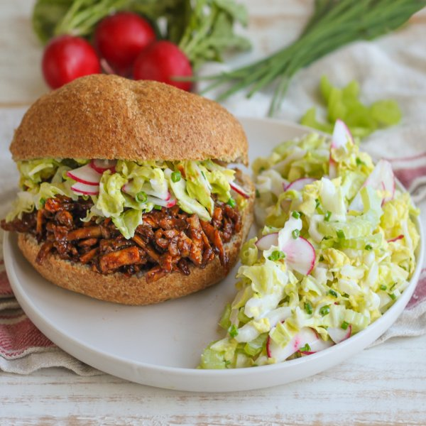

Shredded BBQ Tofu Bun with Creamy Cabbage, Radish, Celery & Chive Slaw

Total Time
35 min
Nutrition (Per Serving)
585.6 kcalCalories
31.3 gProtein
59.7 gCarbs
28.2 gFat
Full nutrition table
| Calories | 585.6 kcal |
| Total fat | 28.2 g |
| Saturated fat | 3.8 g |
| Trans fat | 0.4 g |
| Cholesterol | 8.4 mg |
| Sodium | 613.9 mg |
| Carbohydrates | 59.7 g |
| Fiber | 9.7 g |
| Sugars | 29.8 g |
| Protein | 31.3 g |
| Potassium | 1305.5 mg |
| Calcium | 617.1 mg |
| Iron | 6.8 mg |
| Vitamin A | 1067.9 IU |
| Vitamin C | 76.6 mg |
| Vitamin D | 1.4 IU |
Cookware
Ingredients
- 4 stickscelery
- 1 small pkgchives
- 2 (12 oz) pkgsextra firm tofu
- 1lime
- 1 medium headnapa cabbage
- ½ cupplain Greek yogurt
- 1 bunchradish
- 4whole grain buns or rolls
- balsamic vinegar
- black pepper
- brown sugar
- chili powder
- Dijon mustard
- dill, dried
- extra virgin olive oil
- garlic powder
- ketchup
- mayonnaise
- salt
- soy sauce
Steps
- Preheat oven to 400°F.
- Coarsely grate tofu and transfer to a large baking sheet pan. Drizzle with oil and season with spices; stir to coat and spread out in an even layer.2 (12 oz) pkg extra firm tofu
2 tbsp extra virgin olive oil
1 ½ tbsp chili powder
4 tsp garlic powder
½ tsp salt - Place baking sheet in the oven (it doesn't have to be fully heated) and bake, stirring halfway through, until tofu is golden and just starting to dry out, about 20 minutes. Remove from oven.
- Meanwhile, wash and dry the fresh produce.1 lime
1 small pkg chives
1 medium head napa cabbage
1 bunch radish
4 sticks celery - Juice lime into a large bowl.
- Chop chives into small pieces. Add to the bowl with the lime juice along with yogurt, mayo, and spices. Stir to combine the dressing.½ cup plain Greek yogurt
3 tbsp mayonnaise
1 tsp garlic powder
1 tsp dill, dried
½ tsp salt
¼ tsp black pepper - Trim off and discard root end of cabbage; halve lengthwise, then slice crosswise into thin (shred-like) strips. Add to the bowl with the dressing.
- Trim and halve radishes lengthwise, then cut crosswise into thin half-moons. Add to the bowl.
- Trim and thinly slice celery crosswise. Add to the bowl, stir to combine the slaw, and set aside.
- Place ketchup, vinegar, sugar, soy sauce, Dijon, salt, and pepper in a large pot; stir to combine the BBQ sauce.½ cup ketchup
½ cup balsamic vinegar
2 tbsp brown sugar
1 tbsp soy sauce
1 tbsp Dijon mustard
½ tsp salt
½ tsp black pepper - Bring sauce to a boil over medium-high heat. Once boiling, reduce heat to low and continue to cook, stirring occasionally, until slightly thickened, 2-3 minutes. Remove from heat.
- When the tofu is done, add to the pot with the BBQ sauce and stir to combine.
- Toast the buns if desired.4 whole grain buns or rolls
- Place bottom half of each bun on a plate; top with BBQ tofu and a small portion of the slaw. Close with the top half of each bun and serve with remaining slaw on the side. Enjoy!